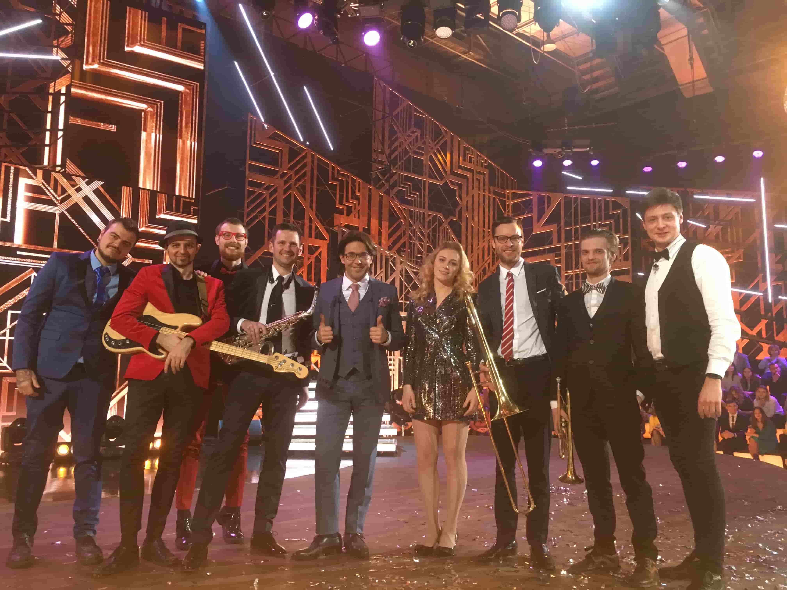
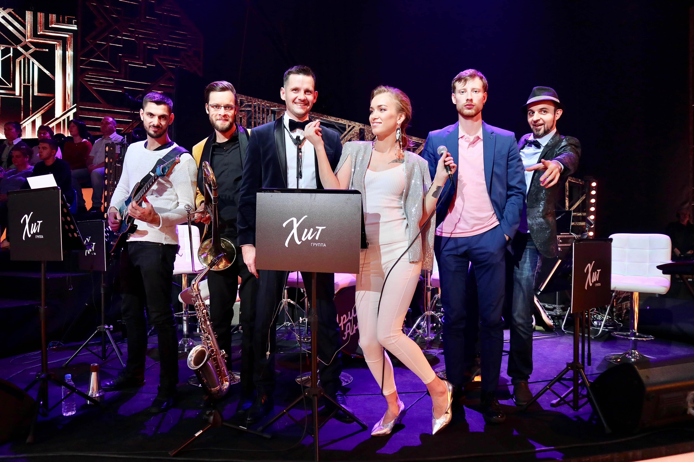

В кадре с Андреем Малаховым

Яркий эфир с Андреем Малаховым

В студии вечернего шоу
За кулисами — дружба и драйв
За кулисами — дружба и драйв
За кулисами — дружба и драйв
Группа «ХИТ» — не просто гости, а любимые резиденты нашей программы.
Каждый выпуск с ними — настоящий праздник! — Андрей Малахов
Телеканал «Россия 1»